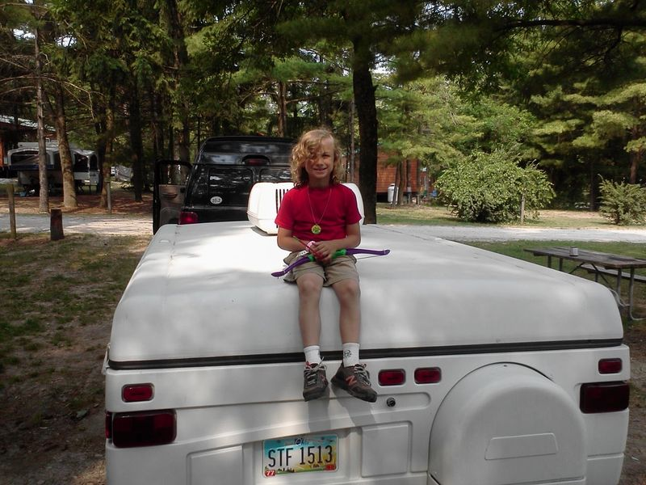

Timeline photos
The Lewis family camper has been with us for many years. It's seen the Atlantic, the Pacific, the Gulf of Mexico and several Great Lakes. It's been to Yellow Stone National Park and just outside Washington DC. We have had a lot of great adventures with it.
But this year we decided we are going to retire the camper. When I asked the family what they wanted to do with it, they said they wanted to give it to a homeless person.
So, now it's on another adventure. It will serve as (illegal) shelter for someone who needs it. I'll tell you more about that at another time.